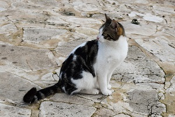
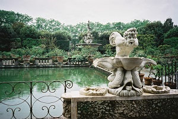

Oltrarno Area: Sample Itinerary, Wed-Sun
- Pitti Palace
- Lunch Nearby Restaurants
- Boboli Gardens
- Snack Nearby cafes and ice cream
- Brancacci Chapel
- Piazzale Michelangelo at sunset
Detailed Site Information
| Site | Hours | Cost | Reservation | Notes |
|---|---|---|---|---|
| Pitti Palace | Tu-Su 8:15-6:50 | €8,50* | No | *Entrance to Palatine Gallery & Modern Art Gallery |
| Boboli Gardens | Everyday 8:15-6:50(June-Aug) -6:30(Apr/May/Sept) -5:30 (Mar/Oct), -4:30 (Nov-Feb) | €7* | No | *includes entry to Museums of Porcelain, Silver, & Costume |
| €11,50* | *Comprehensive ticket to Pitti Palace + Boboli Gardens | |||
| Brancacci Chapel | MWThFSa 10-5, Su 1-5 | €6* | Required | *SaSuM €7 required combined ticket with Fondazione Salvatore Romano at Santo Spirito |
| Piazzale Michelangelo | Free | No |
Nearby Restaurants
- Gustapizza, $, takeout, Via Maggio, 46R
- GustaPanino, $, Piazza Santa Spirito
- Trattoria Boboli, $$-$$$, Via Romana 45 Rosso
- Toscanella Osteria, $$-$$$, Via Toscanella, 32r
- Enoteca Pitti Gola e Cantina, $$-$$$, Piazza Dei Pitti 16
Nearby Cafes and Ice Cream
- Il Caffè, Piazza de' Pitti, 9
- Caffè degli Artigiani, Via dello Sprone, 16/r
- Gelateria Santa Trinita, Piazza Dei Frescobaldi, 8/red
- San Tea House, Via de' Barbadori, 23
- Caffe Neri Ponte Vecchio, 5 R Via Dei Guicciardini 3
Florentine Cats
Visitors to Florence and particularly to the Boboli Gardens will see evidence of Italy's no-kill policy for healthy stray animals. There are some 60 cats that live in the Gardens. They are typically friendly, and if you are open to one sitting in your lap, you may have an unexpected companion for the afternoon.
